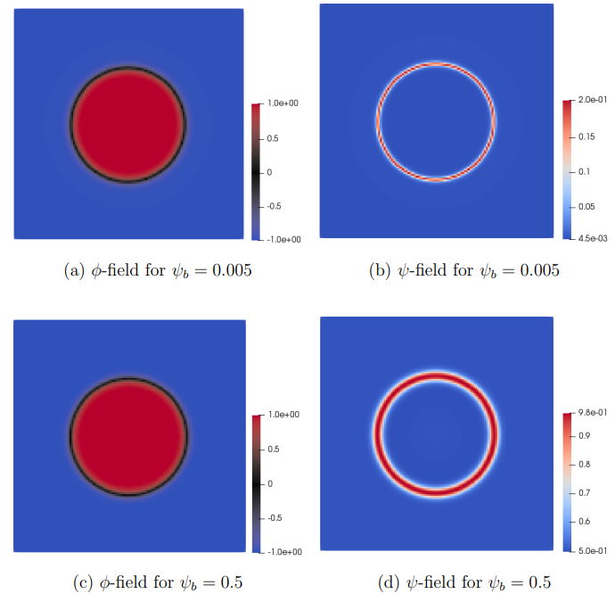
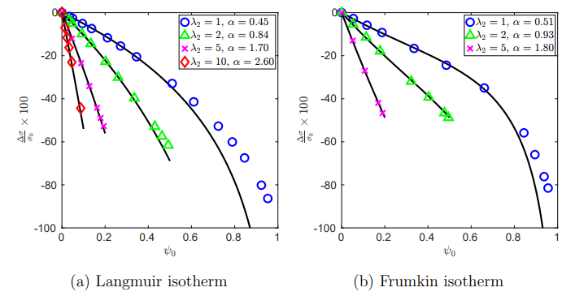

The goal of this project was to develop a diffuse interface model for a system of immiscible liquids (oil and water) and soluble surfactants. The objective was to accurately predict the reduction in surface tension caused by surfactants, a key factor in the enhanced oil recovery (EOR) processes.
Note: Due to future work, the code is not publicly posted, but it is available upon request.
Surfactant adsorption on oil-water interface:
Here, φ is the relative density difference between oil and water. It means that φ = -1, φ = 0, and φ = 1 represent the water phase, oil-water interface, and oil phase, respectively. ψ is the volume fraction of the surfactant, and ψb is the bulk surfactant volume fraction.
The results show that the surfactant distribution over the drop interface is more uniform for higher bulk surfactant volume fraction (Figure (b) vs. Figure (d)).
Surfactant tension reduction for different isotherms:
Here, ψ0 represents the surfactant volume fraction at the oil-water interface. Higher values of λ2 correspond to denser packing of surfactant molecules, while lower values represent the loosely packed arrangement of surfactant molecules. σ0 is the surface tension of the pure oil-water system. The surface tension reduction compared to the pure system is expressed as:
Δσ/σ0 = (σ(ψ0) - σ0)/σ0
α is a fitting coefficient for the analytical equation of surface tension.
The solid curves and markers represent the analytical and numerical solutions, respectively. As the parameter λ2, representing the compactness of surfactant molecules, increases, the surface tension decreases significantly for the same surfactant volume fraction. These results follow experimental observations of the binary liquids-surfactant system for Langmuir isotherm, where surface tension reductions range from 30−60% of σ0.
Overall, the proposed diffuse interface model accurately represents fundamental physical phenomena such as surfactant adsorption dynamics and surface tension reduction for different surfactants.